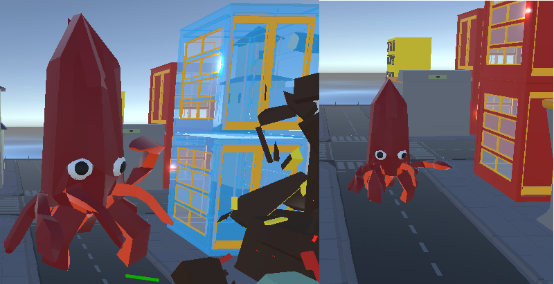

Squidstribution
is a city destruction/god-game hybrid about a kaiju looking for peace and quiet
Development and Engine Choice
The Squidstribution demo project was built using Unity Game Engine v2021.1.21f and the version control was managed with Github to manage the additional contributions made by all team members. The project has started out as a university submission project, and has since been expanded within the level and the systems present in our submission piece. We made use of some Unity packages during development including: shader graph for URP shaders, as well as probuilder for prototyping some of the building designs and destruction effects, and the Low Poly City pack by Synty for some environmental assets and cars. Navigation for the player and NPC movement was handled through the in-built unity Navmesh, but an additional AI package from Unity's Github page allowed for NavSurface definitions and for more control over definitions for agent type behaviours on certain areas. For our scripts we also used the IDamagable interface to make applying damage much easier to objects that extend this behaviour.The Models and associated rubble pieces on custom buildings all were made in Blender, with use from the cell fracture effect, and separated into prefabs in Unity that are swapped out for each other when the buildings are destroyed. This combined with physics affecting the pieces meant that the destruction was varied each time the buildings were destroyed, to help keep game visuals fresher and more engaging. We also installed Cinemachine to smooth camera transitions and work on cutscenes.
We also used tricks such as swapping between cameras with different UI elements and fiters to try and create different feelings based on certain events that happen in game, for instance the above picture shows how certain points in the game will transition to a news camera to help sell that this is a giant monster and create the desired atmosphere when playing the game. The increase distance also helps to make him feel more dangerous. The ticker text running along the news report also pulls from a set of text lines which can help add some variety to the visuals when experiencing this change in camera.
Game Overview
The game sees you controlling the kaiju squid washed up on land in squid city, and from there you must contol him in order to restore the feng shui to restore the karma in the city. These karma points can be spent to create minions in your quest to destroy all the bad buildings and to use special moves for massive damage! The more and more karma you build up the larger and more powerful you grow, but the bigger your threat level becomes the more enemies will come for you.
Enemies chase you down from military bases for as long as they stand, and wherever you go! While the enemies are still alive they will navigate to find you anywhere in the city, and they will even try to find you across the water if they can fly. It's a good idea to destroy their bases first to try and stop them spawning, as the more you progress the more difficult it will be to take them on in order to help create a level curve.

(Further feedback on the project found on my itch.io page is always appreciated, and helps improve the game and all its systems a lot!)
The Team
As a group we all believe the demo is a solid proof of concept that can be worked on, and that the game has a clear vision of how we can progress. We designed the game to the brief, that came from a random idea generated from a seed, of a god game where you distribute squids however we didn't limit ourselves to considering other aspects of the game such as the destruction aspects. As a group we also had to consider the motiviations players have when going into a game as part of the assignment, which led to the creation of a custom achievment even system for completing certain actions during the gameplay. The team was made up of: Charlie Evans, Alexander Hillman, Alexander Long, and Stephanie ChanMy Contributions
In particular I worked on a variety of the game sysetms, the game design, and the art-side of the project. The score calculation system when destroying buildings and killing enemies was done by me and then expanded with our custom event system.The building destruction code was done by me and another team mate with further additions such as special composite building types and buildings that can't be destroyed until certain conditions are met etc were added by me. Below is the standard destruction script for buildings:
Applies damage to this object.
Gets the correct prefab for the rubble pieces, adds physics to them, and calls on the deactivation of the pieces on a timer.
It then alerts the event manager upon deactivation.
I also worked on the player input and movement systems that make use of the navmesh objects and moves the player towards the point, clicked based on the screen position. The system works as the certain places are marked as ground using layers and so additional input functionality such as the unit selection can be achieved using additional layers which also have modified conditions to add more functionality to mouse input. The logic for the unit control and their input system was also implemented by me.
Additional player input logic for the special abilities that deal extra damage and make us of the karma point system was added and then further optimised and improved by me. The special attack systems was changed to be event based, and uses a inheritance Object Orientated Programming principle to derive different abilities as child classes, which helps it to be expandable. As each ability is a component on the player as well this should in theory make setting up a system for swapping abilities modular out in a load out fairly feasible and is something I hope to do in the future.
I made some updates to the UI, such as adding in several more bars to communicate information to the player quickly such and also creating the sprite work for them, as well as writing a bar fill script which manages how much to fill each bar.
Furhter more I worked on some simple environemntal scripts to help with balancing and making the city itself more interactive, such as the healing script that attaches to floor pieces in water sections. There is also a desctruction script which allows parts of the city that aren't buildings to also be destroyed, with out the need for the additional component dependacies that buildings need.
I worked on creating the visuals and upgrading them since the submission date as well, teaching myself about shaders in unity and controlling variables on the shader through code as well which I set up this dissolve shader to remove game objects from the scene smoothly.
There is also the newest designs that I have been working on, for the boss encounter ending the level by working on both the modelling and materials, and the game design documentation for the boss and how it should be implemented. I also worked on setting up cutscenes within the game through cinemachine.
Please check out the game on itch.io!
Download